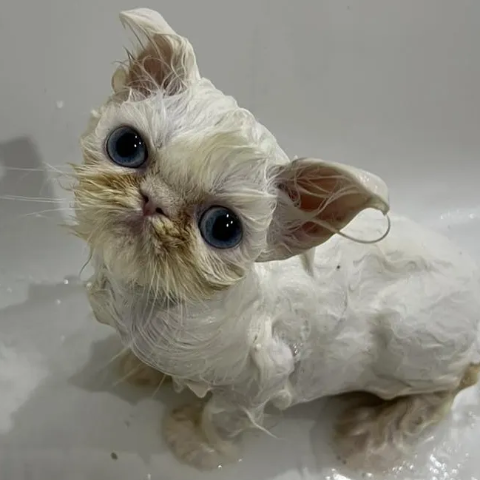

What's
happening
happening
The 3.5-month-old Persian
kitten from Tampa Bay has
taken over the internet with
her scroungy fur, clumsy gait
and sassy, soprano mews.
Link out here >
kitten from Tampa Bay has
taken over the internet with
her scroungy fur, clumsy gait
and sassy, soprano mews.

The intrigue
Maybe it's Amerosa's hilarious video directing, taking viewers
through Wisp's bath time or stitching together clips of her
more talkative moments.
Link out here >
more talkative moments.

The latest
Rags to Riches has peddled
the fame into Wisp-themed
T-shirt sales and fundraising campaigns to benefit the
rescue, which Amerosa runs
with the help of a few
volunteers.
Link out here >
the fame into Wisp-themed
T-shirt sales and fundraising campaigns to benefit the
rescue, which Amerosa runs
with the help of a few
volunteers.